# GPT-ST: Generative Pre-Training of Spatio-Temporal Graph Neural Networks
- 阅读日期：2026-04-08
- 阅读状态：已读
- 标签：#paper #spatio-temporal #gnn #pretraining #imported
- 相关方向：时空预测、图神经网络预训练、结构感知掩码
- 阅读目的：提炼 GPT-ST 的可迁移预训练范式并保留原始图文细节
1. 论文信息
- 题目：GPT-ST: Generative Pre-Training of Spatio-Temporal Graph Neural Networks
- 链接：GPT-ST预训练时空框架.pdf
- 作者：Zhonghang Li, Lianghao Xia, Yong Xu, Chao Huang
- 单位：待逐一补全（已核对作者与 NeurIPS/OpenReview 版本）
- 发表：NeurIPS 2023（Poster）
- 关键词：spatio-temporal prediction, masked autoencoder, hypergraph, cluster-aware masking, transferable pretraining
- 源笔记：GPT-ST预训练时空框架.md
2. 先看结论（适合快速回顾）
- 这篇论文主要解决什么问题：时空预测预训练跨模型迁移弱、结构信息利用不足。
- 提出的核心方法是什么：定制参数学习 + 分层超图编码 + 聚类感知掩码的两阶段预训练框架。
- 最终最重要的结果是什么：在多数据集/多下游模型上实现稳定收益并兼顾可解释性。
- 我现在是否值得深入读：值得
- 原因：方法可插拔，工程复用价值高。
3. 问题定义
3.1 研究问题
- 论文关注的核心问题：构建一个面向时空预测的生成式预训练框架，在不重做下游模型主干的前提下提高预测精度。
- 为什么这个问题重要：现有方法通常针对单一架构优化，跨模型迁移弱，且直接改下游端到端网络容易导致性能不稳定。
-
论文要优化或解决的目标：统一建模“时间动态 + 节点个体 + 聚类内关系 + 聚类间迁移关系”，并把这种表示迁移到多类下游任务。
-
图片与笔记（问题背景）
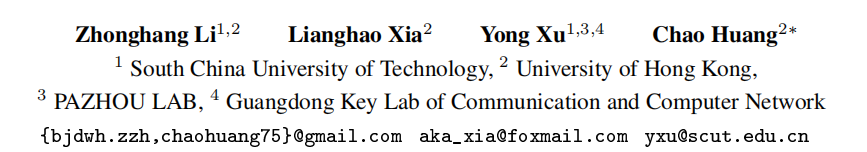
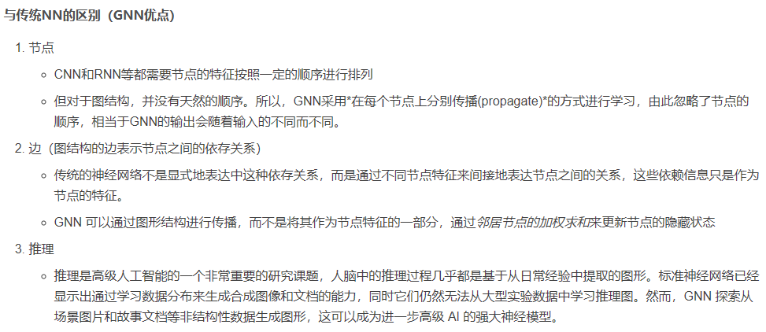
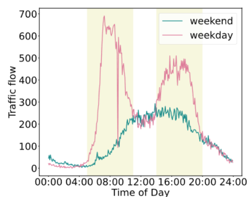
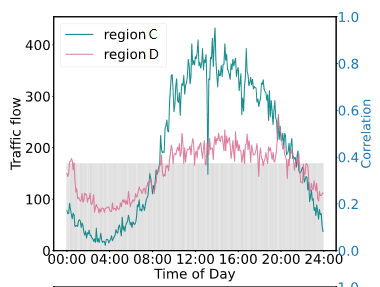
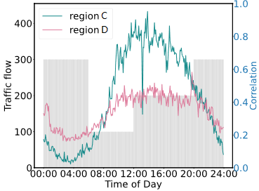
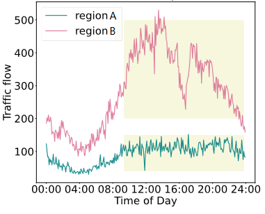
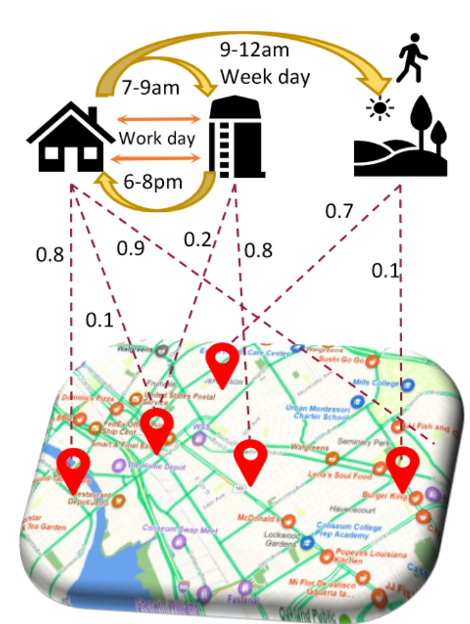
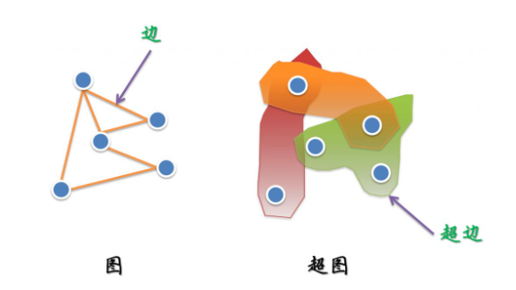
3.2 为什么重要
- 这个问题为什么值得做：时空任务分布复杂，单一建模假设难泛化。
- 现实应用价值：交通/城市计算等场景需要稳定、可迁移的时空表示。
- 学术上的意义：把“结构先验”显式注入到预训练过程。
3.3 难点
- 难点 1：时间模式不是静态的，工作日/周末和不同时段分布差异明显，单一时序参数难覆盖。
- 难点 2：区域间关系存在层次结构，既有细粒度邻接，也有高层功能区语义联系。
- 难点 3：随机掩码预训练常忽略结构信息，学习到的表示对下游回归任务不够“任务相关”。
4. 论文方法
4.1 方法总览
- 方法名称：GPT-ST（Generative Pre-Training for Spatio-Temporal Graph Neural Networks）
- 整体思路：先做结构感知预训练，再把预训练表示融合给下游预测器。
- 代理目标 / 损失 / 优化目标：
- 预训练损失由重建误差
L_r与 KL 散度L_kl组成。 -
下游阶段使用
ζ=f(X_{history})和原始信号联合输入任务模型g进行未来P步预测。 -
图片与笔记（预训练范式）
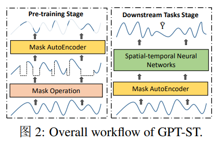
4.2 核心设计
每个设计都尽量回答：做了什么、为什么这么设计、解决了哪个难点
1. 模块一：定制时间模式编码器
- 做了什么：
- 对掩码后的输入做初始嵌入，得到时空表示
E。 - 使用时序超图神经网络编码不同时间片间高阶关系。
- 使用参数学习器按“时间动态 + 区域个体”生成条件化参数。
- 为什么这么设计：
- 通过时间条件参数适应时段变化。
- 通过区域条件参数保持节点个体差异，避免消息聚合后个体信息被抹平。
- 关键实现：
- 时间参数由 day-of-week 等特征经 MLP 生成。
-
区域参数由区域嵌入控制并参与超图传播。
-
图片与笔记（模块一）
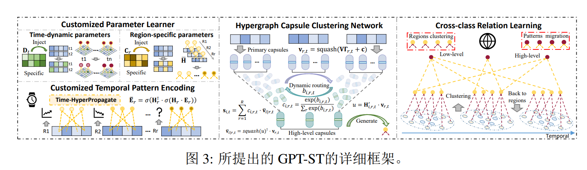
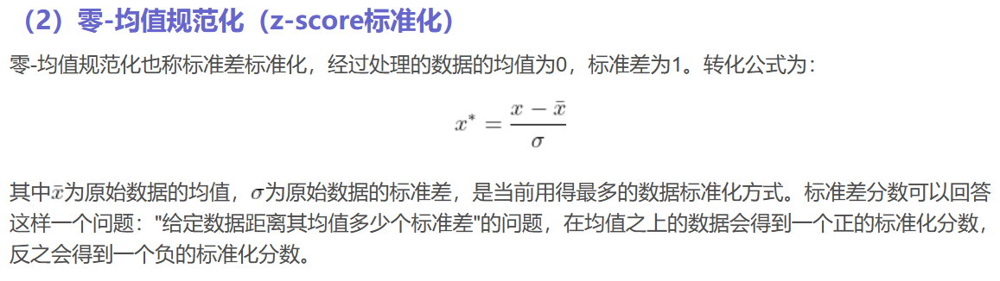
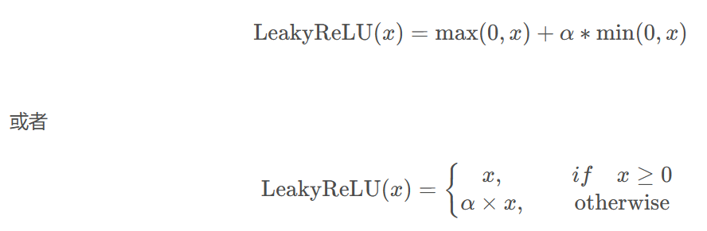
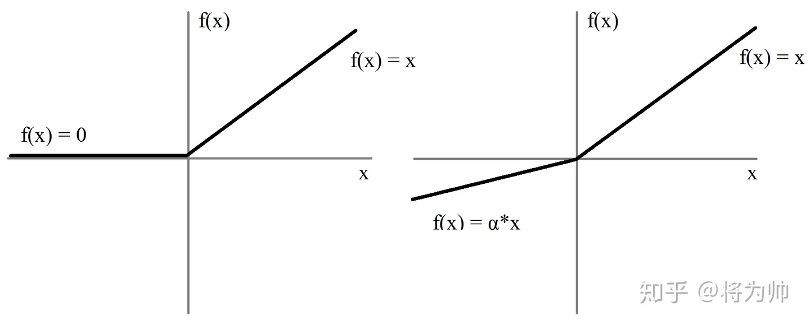
2. 模块二：分层空间模式编码
- 做了什么：
- 通过超图胶囊聚类网络（HCCN）得到聚类内结构。
- 通过跨聚类关系学习模块建模簇间迁移模式。
- 将高层关系回传到区域级表示形成增强表达。
- 为什么这么设计：
- 现实交通中同类功能区内部相似，且不同功能区存在跨簇流动关系。
- 只建模点对点邻接会损失这种语义层信息。
- 关键实现：
- 使用动态路由刻画区域胶囊到簇胶囊的语义对应。
-
使用高层超图学习簇间关系，再通过低层超图映射回节点。
-
图片与笔记（模块二）


3. 模块三：聚类感知掩码机制
- 做了什么：
- 先用分类器估计元素类别概率。
- 按总掩码率分解出“自适应掩码数 + 随机掩码数”。
- 先按类别块掩码，再对剩余元素做随机掩码。
- 为什么这么设计：
- 让模型先学习同簇关系，再逐步学习跨簇推理。
- 避免纯随机掩码导致训练目标过于局部、缺少结构难度。
- 关键实现：
- 用 KL 散度对齐预测分类与聚类结果（阻断聚类分支反传）。
-
掩码算法显式控制
m_t,m_a,m_r。 -
图片与笔记（模块三）
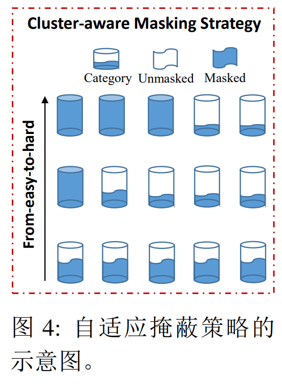
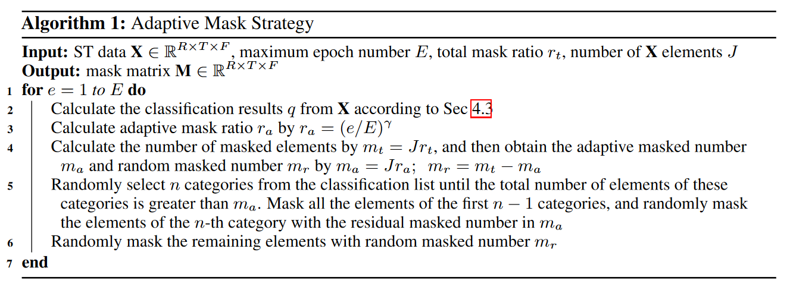
4.3 训练 / 推理细节
- 训练阶段做了什么：结构感知掩码预训练，联合
L_r + L_kl。 - 推理阶段做了什么：将预训练表示与历史信号融合后送入下游模型预测。
- 损失函数组成：重建误差与 KL 散度。
- 关键超参数：
L=12、掩码率、自适应掩码比例、数据划分策略等。 - 复杂度 / 额外开销：预训练模块增加训练复杂度，但可换来跨模型迁移收益。
4.4 附录算法步骤（完整迁移）
- 输入：
X∈R^{R×T×F}、掩码矩阵M、动态路由迭代R、最大 epochE、学习率η。 - 输出：训练后参数集合
Θ。 - 步骤 1：初始化
Θ。 - 步骤 2：根据分类结果
q生成掩码矩阵M。
- 步骤 3：对
X掩码并计算初始表示E。 - 步骤 4：计算时间特征
d_t，初始化区域嵌入c_r。
- 步骤 5：把
d_t与c_r融入时序超图网络，编码时序模式。
- 步骤 6：生成归一化区域嵌入并计算区域到聚类中心的信息传递。

- 步骤 7：执行动态路由计算区域-聚类语义相似性。

- 步骤 8：得到最终聚类嵌入用于跨类关系学习。
- 步骤 9：构建个性化高级超图并建模类间关系。

- 步骤 10：将聚类嵌入回传到区域嵌入。

- 步骤 11：预测
Ŷ并计算绝对误差损失L_r。
- 步骤 12：计算 KL 散度
L_kl。
- 步骤 13：计算总损失
L。
- 步骤 14：梯度下降更新参数。
5. 论文贡献（只写作者真正新增的东西）
- 贡献 1：提出了可插拔、可扩展的时空预训练框架 GPT-ST。
- 贡献 2：提出“定制参数学习 + 分层超图编码 + 聚类感知掩码”的联合机制。
- 贡献 3：在多个真实数据集与多类下游模型上验证了泛化提升、可解释性与效率平衡。
判断标准：如果删掉这一点，论文是否还成立？如果“是”，那它可能不是核心贡献。
6. 实验设置
- 数据集：PEMS08、METR-LA、NYC Taxi、NYC Citi Bike。
- 模型：多类下游基线（如 STGCN、MSDR、GWN 等）+ GPT-ST 预训练增强。
- 对比方法：
- 原始下游模型（无预训练）。
- STEP 预训练。
- DGI / GraphCL 风格预训练替代。
- 随机掩码与其他掩码策略替代（Ran0.25、Ran0.75、GMAE、AdaMAE）。
- 评价指标：MAE、RMSE、MAPE。
- 关键超参数：时间窗口
L=12，不同数据集划分比（METR-LA 7:1:2，其他 6:2:2），掩码率与自适应掩码率调参。
7. 主要结果
7.1 主结果
- 结果 1：GPT-ST 对不同下游模型均有稳定增益，说明预训练表示具跨架构通用性。
- 结果 2：对经典基线提升通常更明显，说明 GPT-ST 能补齐弱模型的结构表示能力。
-
结果 3：与 STEP 相比，在仅短期数据预训练场景仍具优势，适用场景更广。
-
图片与笔记（主结果）
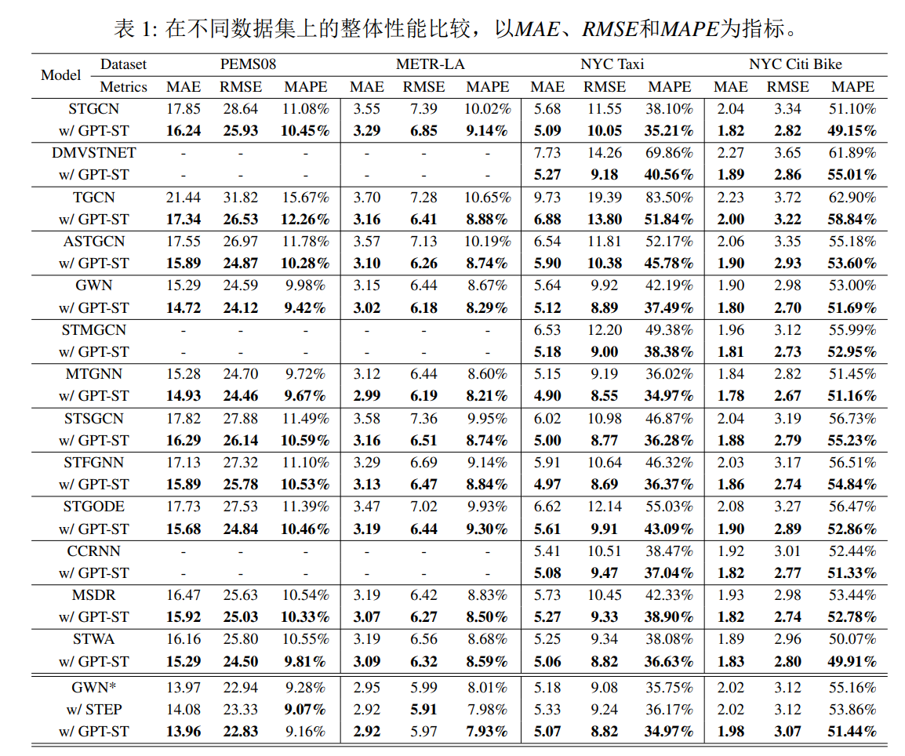
7.2 从结果中能读出的结论
- 结论 1：结构感知预训练在多下游架构上都有迁移增益。
- 结论 2：聚类网络与跨聚类关系模块是核心性能来源。
- 结论 3：自适应掩码比纯随机掩码更有效。
7.3 最关键的证据
- 最关键表格：四数据集主结果对比（主结果图）。
- 最关键图：框架总览图与消融图。
- 最关键数字：多模型均有稳定提升（详见图表）。
- 为什么它最关键：同时验证“泛化性 + 结构设计有效性”。
8. 消融实验
- 消融点 1：移除参数学习器（-P）会降性能，说明时间/区域条件化参数有效。
- 消融点 2：移除聚类网络（-C）退化最大，说明聚类内结构是核心收益来源。
- 消融点 3：移除跨聚类关系（-T）也显著退化，说明簇间迁移信息不可忽略。
- 消融点 4：自适应掩码优于纯随机掩码与其他掩码替代策略。
-
消融点 5：用 DGI/GraphCL 替代预训练虽优于无预训练，但不如 GPT-ST 的掩码重构任务。
-
图片与笔记（消融）
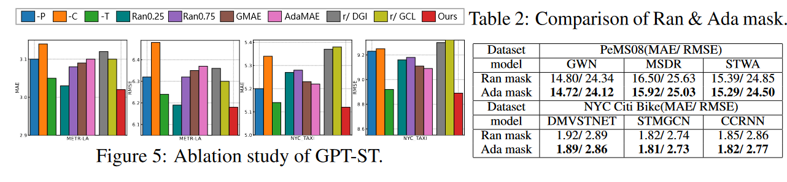
9. 和已有工作的关系
- 这篇论文最接近哪些方法：STEP、DGI、GraphCL 等时空/图预训练方法。
- 和已有方法相比，最大的不同：聚类感知掩码与分层超图联合建模。
- 真正的新意在哪里：把预训练目标与时空结构先验对齐。
- 哪些地方更像“工程改进”而不是“方法创新”：具体超参数与模块拼接策略。
- 这篇论文在整个研究脉络里的位置：时空图预训练从“通用掩码”走向“结构掩码”的代表工作。
10. 我的理解（这一节不能照抄论文）
- 直观理解：GPT-ST 把“时空预训练”从通用 MAE 升级为“关系驱动 MAE”，关键在于掩码策略和分层关系建模协同。
- 最值得关注的设计：聚类感知掩码把训练难度与结构学习方向绑定，不是简单提升掩码比例。
- 和已有方法相比的新意：强调可迁移增强而非替换下游主干，工程上更实用。
-
我认为最强的一点：同时兼顾性能增益、解释性展示（聚类可视化）和训练效率约束。
-
图片与笔记（可解释性）
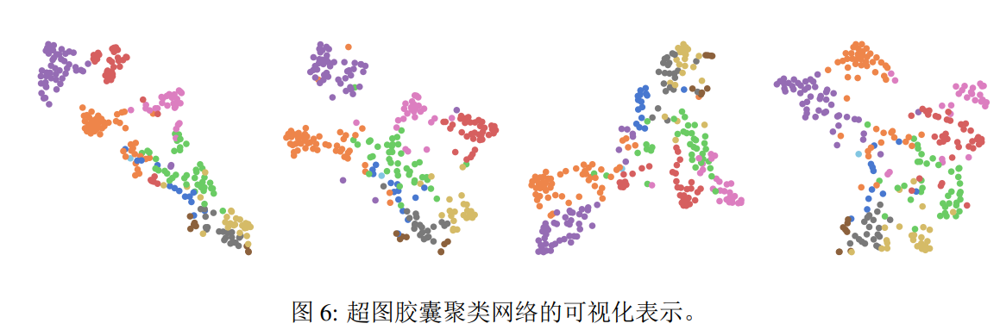
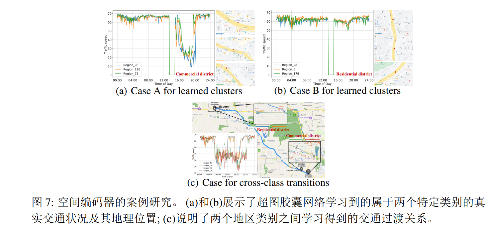
11. 局限性
- 局限 1：聚类质量对整体效果敏感，若聚类偏差大，掩码与簇间关系学习会受影响。
- 局限 2：模块较多，训练和调参复杂度高于简化预训练方案。
- 局限 3：当前验证集中在交通场景，跨领域泛化需要进一步实证。
可从假设过强、实验覆盖不足、开销过大、泛化不明、复现风险高等角度写。
12. 对我的启发
- 能直接借鉴的部分：结构感知掩码与层次关系编码的联合设计。
- 不能直接照搬的部分：聚类质量与超参数调节对效果敏感。
- 对我当前课题的启发：可将“簇内-簇间”思想迁移到其他时空任务。
- 可以尝试的改进方向：在线聚类、不确定性掩码、自适应预算训练。
- 可以作为 baseline / 对比项 / ablation 的部分：随机掩码、去聚类模块、去跨簇关系模块。
13. 待验证问题
- 问题 1：是否可用在线聚类替代静态聚类以应对分布漂移？
- 问题 2：可否引入不确定性建模，让掩码策略自适应置信度？
-
问题 3：在固定训练预算下，GPT-ST 增强与下游主干扩容的性价比边界在哪里？
-
图片与笔记（效率与超参）
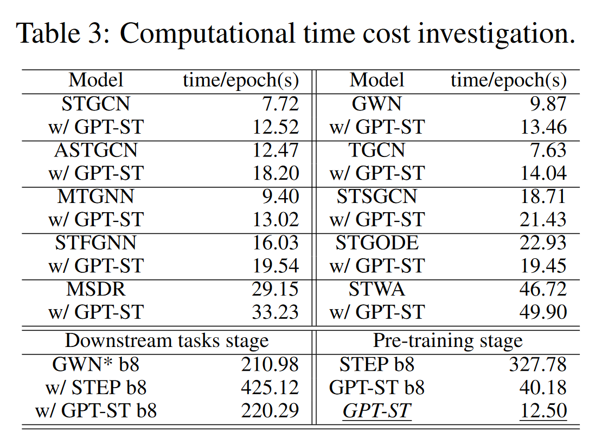
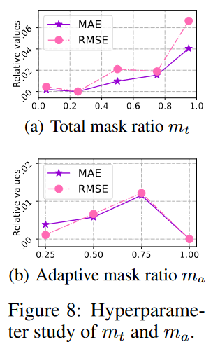
14. 一句话总结
- GPT-ST 用结构感知预训练机制把时空关系学得更“可迁移”，并在多任务上稳定提升下游预测性能。
15. 快速索引（便于二次回看）
- 核心公式：
L_r + L_kl、聚类感知掩码相关定义。 - 核心图表：框架总览、主结果图、消融图、效率与超参图。
- 最值得复看的章节：方法细节三模块与附录算法步骤。
- 复现时最需要注意的点：聚类质量、掩码率设置、下游融合方式。
15.2 导入来源与完整性记录
- 源笔记：GPT-ST预训练时空框架.md
- 论文文件：GPT-ST预训练时空框架.pdf
- 联网补充来源：
- arXiv: https://arxiv.org/abs/2311.04245
- OpenReview（NeurIPS 2023 poster）: https://openreview.net/forum?id=nMH5cUaSj8
15.3 已完成自检记录
- [x] 原始笔记所有内容已整理进模板结构。
- [x] 图片已插入并保留在对应位置。
- [x] 已联网补充论文元信息。
15.1 整合说明 / 索引
- 原始导入中的附录算法步骤已完整迁移至正文
4.4。 - 本节仅保留索引说明，不再堆放原始转录内容。
Wiki 关联
- 参考摘要：GPT-ST Spatio-Temporal Pretraining
- 概念锚点：Spatio-Temporal Pretraining for Language Models、Cluster-Aware Masked Pretraining、Hierarchical Spatio-Temporal Hypergraph Encoding
- 实体锚点：GPT-ST、PEMS08 Dataset、Zhonghang Li、Chao Huang
- 综合页面：Temporal Structure Learning in Sequence Models、Spatio-Temporal Representation in Language Models、Structured Spatio-Temporal Representation Learning